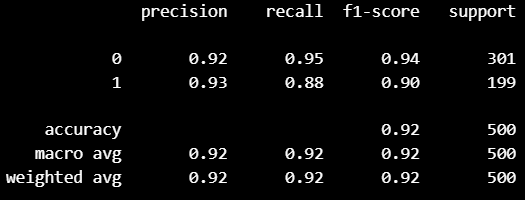

I used my second AI coursework as an opportunity to explore one of my interests at the time, meta learning. I created a spam classifier with logistic regression, and used MAML for pretraining.
My first AI coursework required me to create a sudoku solver that could solve 30 puzzles in 30 seconds or less. I applied Donald Knuth's algorithm X to these puzzles, ultimately solving the problems in 2.6 seconds.
One of my earliest projects was creating an agent that learns to play flappy bird in python using a feed forward neural network.
Agent Trained to Oppose Me (A.T.O.M) is a bot created to compete against the user in tic tac toe. It uses minimax to evaluate the board state and choose the best possible move.
My Extended Project Qualification (EPQ) uses logistic regression to recomed films to a given user.
Uses text rank algorithm to estimate the importance of each line in a given text and returns the most important lines to give a general overview of what the text is about
Uses an LSTM to perform setiment analysis on user's text input. K-Nearest Neighbour is performed on this data combined with data regarding other features (collected with unconvential methods) to recommend a career paths suited to the user.